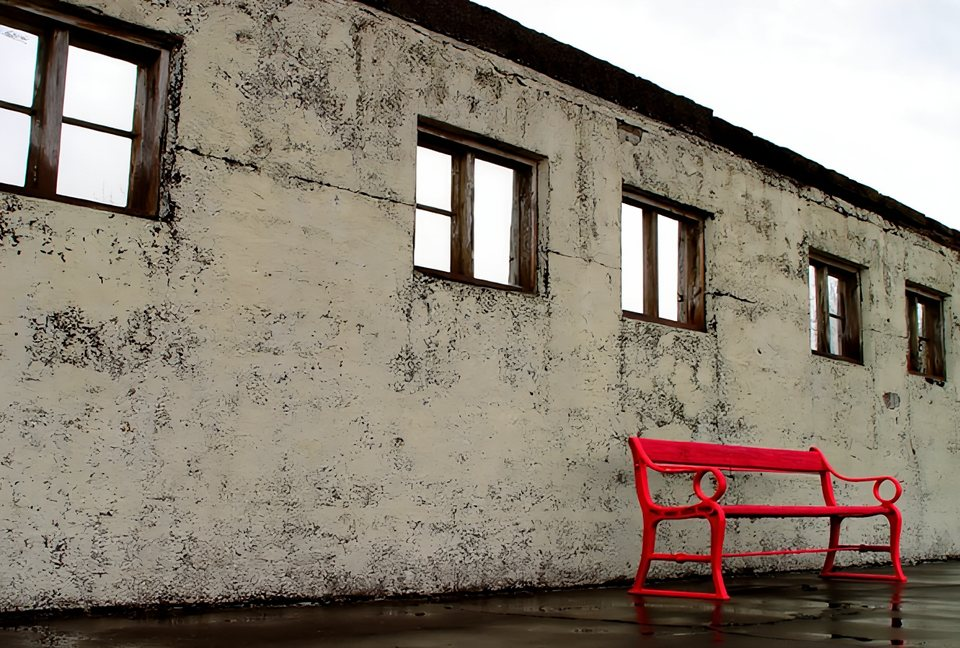
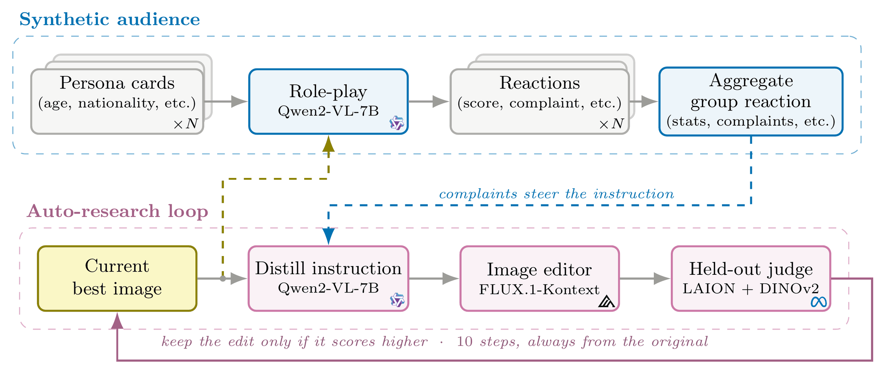
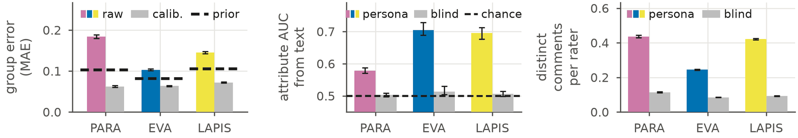
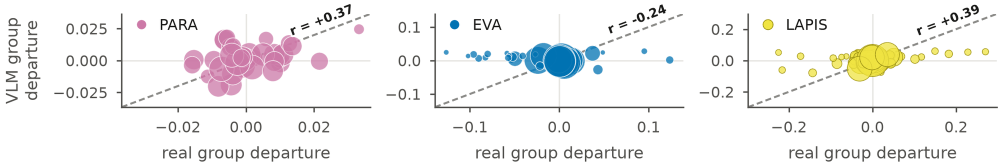
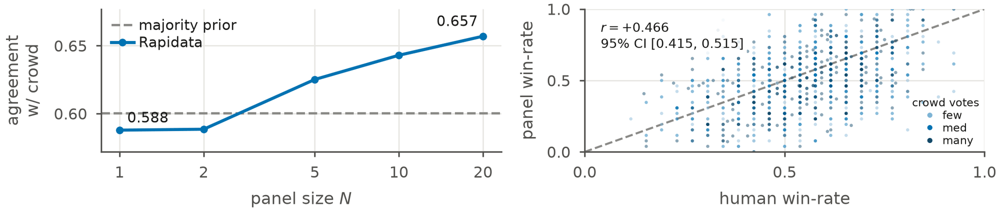
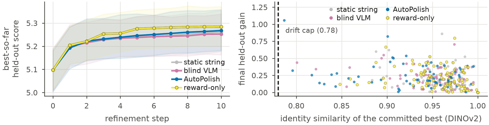

AutoPolish
Improving Visual Aesthetics with Synthetic Audience Critique
Many copies of one vision-language model each react to a photograph as a different viewer. Their combined complaints become edit instructions, and an independent scorer keeps an edit only if the image scores higher and still looks like the original.
Ten viewers, ten rounds, one bench
A real run from the paper · EVA photograph
Round 10Round 10 kept. The edit raised the score, so it became the new best image.
Instruction triedVividly color the red bench to stand out more against the muted background.
Abstract
One operator's taste is not the audience's.
Text-guided image editing is an iterative, human-in-the-loop process that does not scale and restricts the final image to one operator's taste, which often misaligns with the target audience. We propose AutoPolish, which replaces that operator with a synthetic audience: many copies of a vision-language model, each reacting as a different viewer described by a short profile. An auto-research style loop turns their combined feedback into edits, keeping each edit only when an independent scorer rates it higher.
Across three datasets of photographs and paintings, only 19 to 47% of one person's rating is shared with other viewers, while the averages of two separate groups correlate at up to 0.96, so one rater poorly predicts the population average. Our audience captures how viewer groups differ up to 10× better than the same model without profiles, and agrees with the human majority on pairs of AI-generated images 6 percentage points more often than a simple baseline. In editing, AutoPolish matches generic critics in average gain while keeping images recognizable; it improves fewer images than a fixed instruction but makes larger edits and proposes 3× as many distinct changes.
Method
An audience proposes, an independent judge decides.
Nothing is trained. One frozen model plays every viewer, and the model that judges an edit comes from a different family than the one that proposes it, so the loop cannot raise its own score without improving the image.

Simulate the audience
Each persona card describes a real rater from the dataset: age, gender, education, art and photography experience, personality or nationality. The model rates the image as that person and writes the one change they would want.
Turn complaints into an edit
The complaints of the whole panel are condensed into one instruction of at most fifteen words. The editor always applies the accumulated instruction to the original image, so artifacts cannot pile up, and proposes three candidates.
Keep only real improvements
A LAION aesthetic predictor scores each candidate, and DINOv2 checks that it still resembles the original (similarity at least 0.78). The best candidate replaces the current image only if both checks pass. The loop runs for ten rounds.
Results
Groups are predictable where individuals are not.
We test the audience on 4,000 photographs from PARA, 4,070 from EVA and 4,000 paintings from LAPIS, replaying each dataset's real raters as personas, and on 898 pairs of AI-generated images from Rapidata.
of one person's rating is shared with other viewers, while the averages of two separate groups agree at up to 0.96.
Reliability, three datasetsbetter separation of viewer groups than the same model without profiles, 0.166 against 0.016 on paintings.
Group separation, LAPISagreement with the human majority on AI-generated pairs, 65.7% with twenty personas against 60.0% for always picking the more popular model.
Rapidata pairsas many distinct changes proposed per round as a generic critic, 3.12 against 1.00, at the same average gain.
Editing, 100 photographsThe persona changes what the model writes more than what it scores

The persona moves the scores the way real groups differ

A larger panel agrees more often with the crowd

In editing, AutoPolish matches the other critics on average and makes larger changes

| Critic | Gain | 95% CI | Images improved | Gain per improved | Edit size | Complaints per round |
|---|---|---|---|---|---|---|
| static string | 0.164 | [0.135, 0.196] | 84% | 0.195 | 0.032 | n/a |
| blind VLM | 0.155 | [0.126, 0.185] | 72% | 0.215 | 0.036 | 1.00 |
| AutoPolish | 0.170 | [0.136, 0.207] | 69% | 0.247 | 0.049 | 3.12 |
| reward-only | 0.187 | [0.157, 0.221] | 86% | 0.218 | 0.040 | n/a |
Ten rounds on 100 photographs (50 PARA, 50 EVA). Gain is the rise in the held-out aesthetic score. The differences in average gain between critics are within their confidence intervals; reward-only optimizes the scorer directly and is a reference, not a comparable critic.
Examples
Where AutoPolish changes the picture.
Each critic's best image after ten rounds, with its held-out score. AutoPolish often changes what the photo contains, while the other critics mostly adjust light and color. Choose a photograph.
Citation
BibTeX
@article{fadaeinejad2026autopolish,
title = {AutoPolish: Improving Visual Aesthetics with Synthetic Audience Critique},
author = {Fadaeinejad, Amin and Pakdamansavoji, Sajjad},
journal = {arXiv preprint arXiv:XXXX.XXXXX},
year = {2026}
}